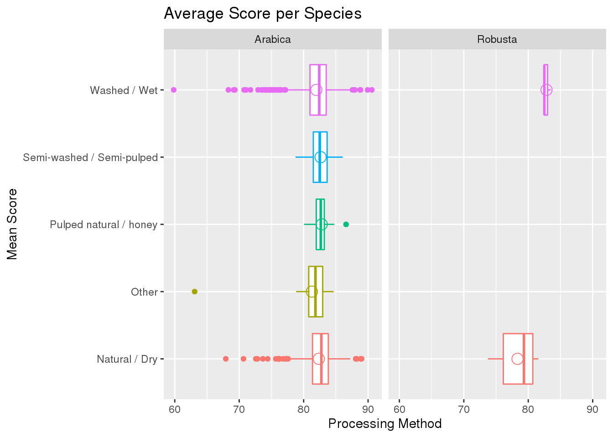

library(here)
library(ggplot2)
library(tidyverse)
library(readxl)
knitr::opts_chunk$set(tidy = TRUE, echo = TRUE)
coffee <- read_csv(here::here("data", "tidytuesday", "data", "2020", "2020-07-07", "coffee_ratings.csv"))
For this dataset, I will be examining the ratings of coffee beans being processed in various ways. The different ways that coffee beans can be processed are natural/dry, pulped natural/honey, semi-washed/semi-pulped, or washed/wet. This data consists of 1,339 observations and 43 variables, only 6 of which I will be using in my analysis. The first variable I will use is total_cup_points. This variable is the total score that the coffee receives out of 100. The second variable is processing_method, which states the method by which this coffee was processed. The third variable is country_of_origin. This variable states which country the coffee was produced in. The fourth variable I will use is category_one_defects. The fifth variable I will use is category_two_defects. Both the fourth and fifth variables show the amount of the different types of defects. The final variable I will be using is species, which shows the species of coffea.
Question 1
How does the rating differ between cups that were processed in one of the various ways? To explore this question, we need to first select the data to only show the variables total_cup_points and processing_method. Then we filter out the entries with N/A. This gives us only the data that has an entry for the processing_method variable. We do this because any data that doesnt have an entry is irrelevant because it is unknown which method was used. We will use this filter for several of the other questions as well. We wil be using a box plot for this question to show the ranges of scores.
coffee %>% select(total_cup_points, processing_method, region) %>% group_by(processing_method) %>%
filter(!is.na(processing_method)) %>% ggplot(aes(x = processing_method, y = total_cup_points,
color = processing_method)) + geom_boxplot(show.legend = F) + ggtitle("Score per Processing Method") +
xlab("Total Cup Score") + ylab("Processing Method") + coord_flip()
 As you can see, coffee that was processed using a washed/wet method or a natural/dry method showed a wider range of results than the other methods. While this may be in part that those two methods had a larger sample size, the other methods did not have any scores blelow a 75 while the first two methods had numerous below 75. This shows that the other methods are more difficult than the washed/wet and the natural/dry methods, but yield higher quality coffee more consistently.
As you can see, coffee that was processed using a washed/wet method or a natural/dry method showed a wider range of results than the other methods. While this may be in part that those two methods had a larger sample size, the other methods did not have any scores blelow a 75 while the first two methods had numerous below 75. This shows that the other methods are more difficult than the washed/wet and the natural/dry methods, but yield higher quality coffee more consistently.
Question 2
Which species of coffee produce the highest average score with each method? For this question, we must first select the appropriate data. I will be selecting the variables total_cup_points and species. We start by selecting the appropriate variables and filtering out the N/A entries like in the ladts question. For this chart we will be using box plots similar to the last question, with the addition of a circle indicating the average score per processing method. This circle is hollow and lies within the boxes.
coffee %>% select(total_cup_points, species, processing_method) %>% filter(!is.na(processing_method)) %>%
group_by(processing_method, species) %>% ggplot(aes(x = processing_method, y = total_cup_points,
color = processing_method)) + geom_boxplot(show.legend = F) + facet_wrap(~species) +
ggtitle("Average Score per Species") + xlab("Mean Score") + ylab("Processing Method") +
coord_flip() + stat_summary(fun.y = mean, geom = "point", shape = 1, size = 4,
show.legend = F)

As we can see, For the Arabica species the pulped natural/honey method produced the highest average score, and for the Robusta species the washed/wet method produced the highest average score by a signifigant margin. Judging by the box plots, the range of higher scores for the Robusta species using the washed/wet method is much higher than the range of the natural/dry method. This is different than the Arabica species which has both of those methods much closer together. Also from this chart, we can tell that the Robusta species benefits from exposure to water as opposed the being dried. We can also tell that the Arabica species produces high scores with both methods. We can gather this by looking at the scores. The Robusta species has a significantly lower natural/dry score than the Arabica species.
Question 3
Which countries produce the highest rating using each producing method? For this question we should start by selecting the appropriate data and filtering out the N/A entries. After that we should get the average cup score by summarizing that scores into a new variable.
coffee %>% select(total_cup_points, country_of_origin, processing_method) %>% filter(!is.na(processing_method)) %>%
group_by(country_of_origin, processing_method) %>% summarize(mean_score = mean(total_cup_points)) %>%
ggplot(aes(x = mean_score, y = country_of_origin, color = country_of_origin)) +
geom_point(show.legend = F) + facet_grid(~processing_method) + ggtitle("Average Score per Country of Origin") +
xlab("Mean Score") + ylab("County of Origin")
 As we can see Uganda, Papua New Guinea, and Ethiopia had the highest average score for the washed/wet method. For the natural/dry method, Tanzania, Panama, and Kenya had the highest average scores. For the semi-washed method, Thailand had the highest average score. For the Pulped natural method, Thailand, Taiwan, and Japan had the highest average scores. Finally for other mathods not listed, Costa Rica had the highest average score.
As we can see Uganda, Papua New Guinea, and Ethiopia had the highest average score for the washed/wet method. For the natural/dry method, Tanzania, Panama, and Kenya had the highest average scores. For the semi-washed method, Thailand had the highest average score. For the Pulped natural method, Thailand, Taiwan, and Japan had the highest average scores. Finally for other mathods not listed, Costa Rica had the highest average score.
Question 4
Which processing methods cause the highest average defects in the coffee? There are two different categories of defects when it comes to coffee. The first category is a full defect. This includes a fully black or sour bean, as well as sticks or stones being included in the harvest. The second category is a partial defect. This includes broken of chipped beans, damage by insects, partially sour or blackened, or water damage. This question is going to explore how the different processing methods we have been analyzing effects the number of defects in the coffee.
coffee %>% select(processing_method, category_one_defects, category_two_defects) %>%
group_by(processing_method) %>% filter(!is.na(processing_method)) %>% summarize(average_defects = mean(category_one_defects)) %>%
ggplot(aes(x = processing_method, y = average_defects, fill = processing_method)) +
geom_bar(stat = "identity", show.legend = FALSE) + coord_flip() + ggtitle("Average # of Category One Defects per Processing Method") +
ylab("Average Category One Defects") + xlab("Processing Method")
coffee %>% select(processing_method, category_one_defects, category_two_defects) %>%
group_by(processing_method) %>% filter(!is.na(processing_method)) %>% summarize(average_defects = mean(category_two_defects)) %>%
ggplot(aes(x = processing_method, y = average_defects, fill = processing_method)) +
geom_bar(stat = "identity", show.legend = FALSE) + coord_flip() + ggtitle("Average # of Category Two Defects per Processing Method") +
ylab("Average Category Two Defects") + xlab("Processing Method")
As we can clearly see, the natural/dry processing method produces the highest average of both category one and category two defects. The amount of category two defects is much higher than category one because category two defects cover a more board spectrum of defects than category one. For example, category one defects say that a fully sour or blackened shell fits into this category. Category 2 however, says that a partially sour or blackened shell fits into this category. The washed/wet method has more category two defects because water damage is included in that category. Just by the nature of the washed/wet method it makes sense that more beans would be water damaged.
Summary
In summary, we can tell that the natural/dry and the washed/wet methods of processing yield the most consistent and highest rated coffee. These two methods are the most popular among most countries, and yield great results. The Arabica species of coffee is also more popular than the Robusta species. This is most likely because the Arabica species handles the washed/wet and the natural/dry method much better than the Robusta species. The Arabica species produced more coffee with higher average scores in the natural/dry method than the Robusta species, and very similar scores using the washed/wet method. Finally, among every country that utilized these processing methods, all of them seemed to be more consistent using the washed/wet method. The natural/dry method was all over the place in terms of scores, while the washed/wet method produced most beans somewhere in the 80 to 85 score range, making the washed/wet method the most consistent and most popular method of processing coffee.